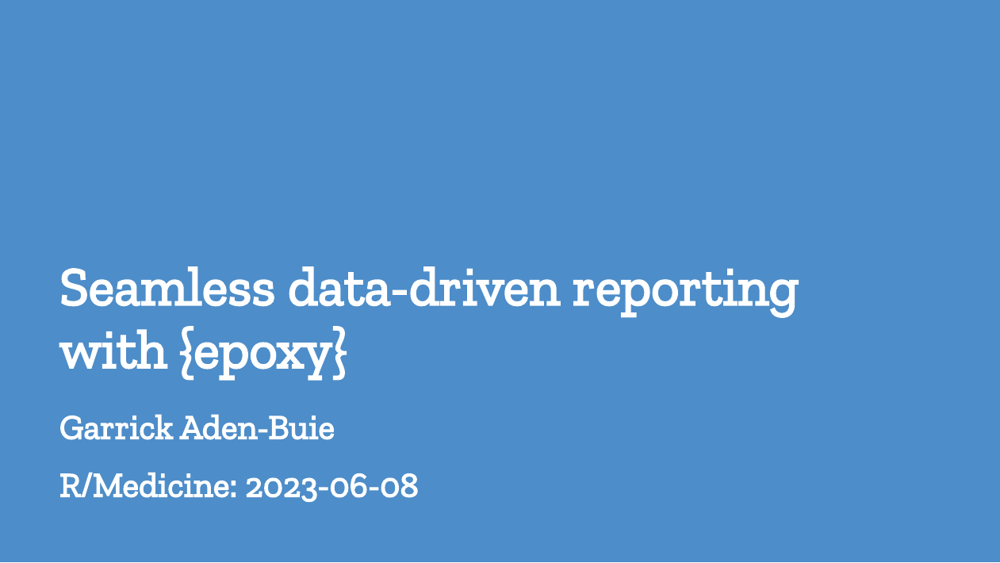
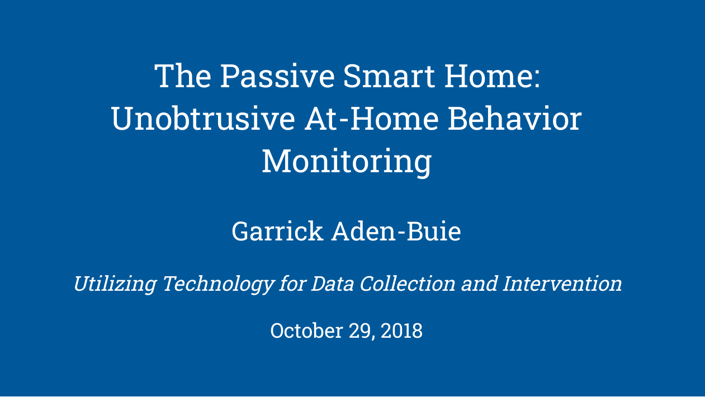

garrick
blog
projects
talks
about
Categories
All
(22)
Conference
(10)
Education
(6)
Talk
(4)
Workshop
(2)
Talks and Presentations
Presentations, talks, and workshops.
Order By
Default
Title
Date - Oldest
Date - Newest
{epoxy}
Conference
Super glue for data-driven reports and Shiny apps.
Sep 20, 2023

Seamless data-driven reporting with {epoxy}
Conference
{epoxy} is a new R package that allows report authors to seamlessly blend prose and data in markdown, HTML, and LaTeX reports.
Jun 8, 2023
Professional, Polished, Presentable
Making great slides with xaringan
Workshop
A
useR!2021
tutorial about making great slides with
xaringan
.
Jul 7, 2021
Sliding in Style
Talk
Make stylish slides with {xaringanthemer} and a little bit of CSS.
Apr 1, 2021
Making Extra Great Slides
With xaringan, xaringanthemer, and xaringanExtra
Talk
A brief introduction to the {xaringan} package and how you can make your slides look great with {xaringanthemer} and stand out with {xaringanExtra}.
Mar 10, 2021
R Markdown: An Incomplete History
Talk
An incomplete history of the literate programming origins of R Markdown. Plus some cool things I’m tinkering with: {epoxy} and {shinyComponents}.
Feb 11, 2021
xaringan Playground
Conference
Making slides with xaringan is a great way to learn more about CSS and web development.
Jan 21, 2021
Build Your Own Universe
Conference
Scale high-quality research data provisioning with R packages package.
Aug 28, 2020
Your Slides are So Extra!
Extra-Special Presentations with xaringanExtra
Conference
A presentation writing and benefiting from programming with functions.
Jul 8, 2020
10,000 Reasons to Love Functions
Education
A presentation writing and benefiting from programming with functions.
May 15, 2020
Extra Awesome xaringan Presentations
Talk
A brief introduction to the {xaringan} package and how you can make your slides look great with {xaringanthemer} and stand out with {xaringanExtra}.
Feb 25, 2020
JavaScript for Shiny Users
Workshop
A two-day workshop to get you up and running with JavaScript in Shiny and interactive R Markdown documents.
Jan 27, 2020
Reproducible Data Workflows With Drake
Education
A gentle introduction to reproducible data workflows with the {drake} package.
Jul 19, 2019
A Gentle Guide to the Grammar of Graphics with ggplot2
Education
An intruction to data visualization with ggplot2 presented at the “Workshop on Data Analysis Using R” hosted by the ASA student chapter at USF.
Nov 6, 2018

The Passive Smart Home: Unobtrusive At-Home Behavior Monitoring
Conference
Presented at the “Utilizing Technology for Data Collection and Intervention” mini-conference at Moffitt Cancer Center
Oct 29, 2018
Unsupervised behavior change detection using passive sensor systems in the homes of older adults
Conference
Presented at the 11th World Conference of Gerontechnology in St. Petersburg, FL.
May 7, 2018
A Gentle Guide to the Grammar of Graphics with ggplot2
Education
An introduction to data visualization using ggplot2 presented at the Tampa R Users Group on 2018-01-23.
Jan 23, 2018
Occupant Activity Profiles from Smart Home Sensor Event Streams
Conference
Faced with a growing elderly population, learning and characterizing activity profiles of smart home occupants will support senior health care management for older adults…
Oct 25, 2017
getting staRted in R
Education
Mar 25, 2016
Ambient Intelligence Applications in Healthcare
Conference
In the past century, the world has experienced unprecedented growth in life expectancy concurrent with a growth in elderly population. Between 2010 and 2050, the number of…
Feb 6, 2015
Reporting Reproducible Research with R and Markdown
Education
Apr 11, 2014
Boosted Tree Ensembles for Predicting Postsurgical ICU Mortality
Conference
Real-time monitoring of patient conditions in the ICU environment is essential in supporting clinical decisions and ensuring optimal allocation of medical resources. This…
Oct 7, 2013
No matching items